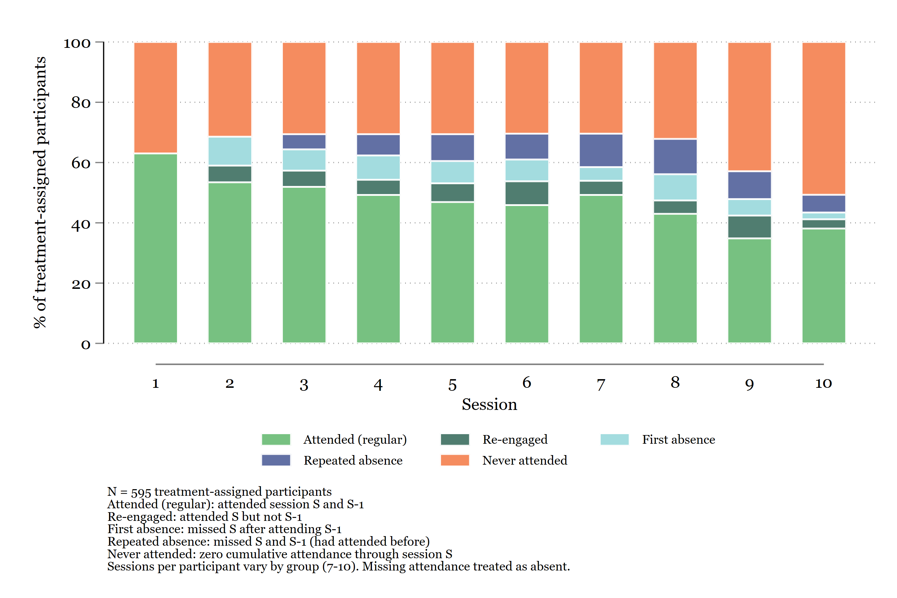
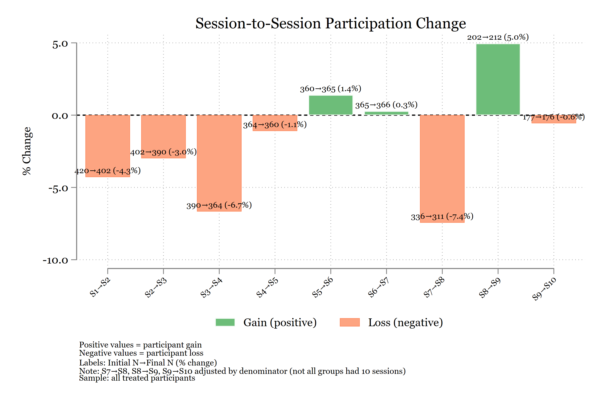
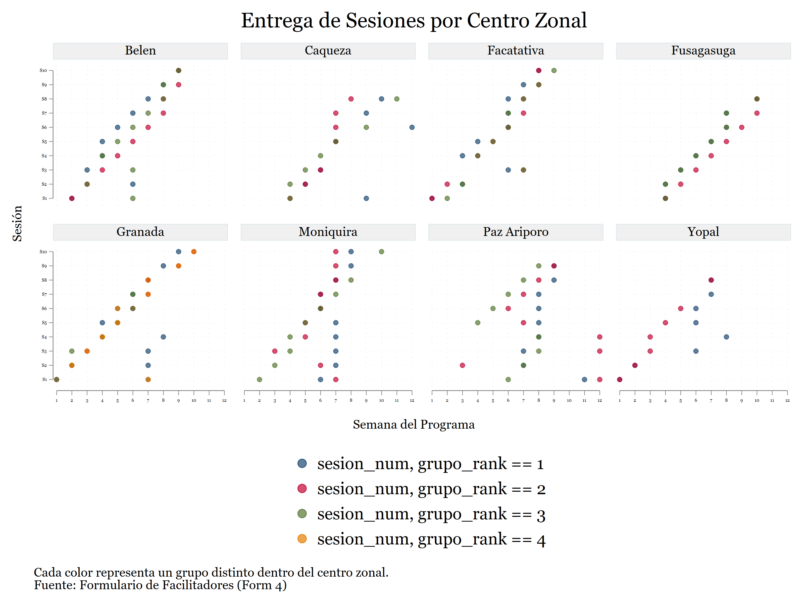

Que se puede lograr
Productos reales construidos con Claude Code
Todo lo que se muestra en esta pagina fue construido con Claude Code en un proyecto real de IPA Colombia. No son demos — son entregables que se compartieron con donantes, equipos de investigacion y socios de implementacion.
Claude Code no hizo estos productos solo. En todos los casos, defini la especificacion, revise cada output, y tome las decisiones analiticas. Pero Claude Code transformo tareas que tomaban dias en tareas de horas.
Un pipeline completo de analisis MEL
El resultado mas ambicioso: un pipeline de 12 scripts de Stata que produce automaticamente todas las tablas, graficos y analisis del reporte de Monitoreo, Evaluacion y Aprendizaje (MEL) de un programa con 600+ participantes en 8 municipios.
Un solo comando ejecuta todo el pipeline:
just stata-run # Corre los 12 scripts en secuenciaEl pipeline incluye: limpieza de datos de asistencia, analisis de desercion, barreras de participacion, fidelidad de implementacion, calidad de sesiones, y analisis de dosis-respuesta. Claude Code escribio y depuro la mayoria de estos scripts iterativamente — yo definia la especificacion analitica, el generaba el codigo, yo revisaba los resultados y pedia ajustes.
Algunos graficos producidos por el pipeline



Presentaciones generadas programaticamente
Las presentaciones de resultados no se hacen manualmente en PowerPoint — se generan con un script de Node.js que usa la libreria pptxgenjs. Claude Code ayudo a disenar todo el sistema:
- Un script de ~1,000 lineas con funciones reutilizables:
topbar(),footer(),sidebar(),callout(),table() - Colores y tipografia IPA aplicados automaticamente
- Las tablas de Stata alimentan directamente las diapositivas
El flujo es: Stata genera tablas → el script de Node.js las lee → produce un .pptx listo para presentar. Cuando se actualizan los datos, se regenera la presentacion completa sin editar una sola diapositiva manualmente.
Un sistema de instrucciones para que Claude trabaje autonomamente
Quizas lo mas util a largo plazo: Claude Code no necesita que le explique el proyecto cada vez que inicio una sesion. Tres documentos le dan contexto persistente:
CLAUDE.md — El briefing del proyecto. Define las dos muestras (COMPLETA para monitoreo, RCT para impacto), el mapa del pipeline, las reglas de PII, las convenciones de codigo, y los globals de rutas.
CLAUDE_STATA_GUIDE.md — Le ensena a Claude como ejecutar Stata en este proyecto. Incluye la instruccion de ejecutar scripts autonomamente despues de editarlos, leer el log, y reportar resultados sin esperar a que se lo pidan.
CLAUDE_DELIVERABLES_GUIDE.md — Documenta el pipeline de Stata a LaTeX: patrones de esttab/outreg2, colores IPA para graficos, compilacion de tablas, y analisis de sensibilidad.
El resultado: cuando pido “corre el script de desercion y dime si paso”, Claude Code ejecuta el script, lee el log, identifica si hubo errores, reporta los coeficientes clave, y me dice donde guardo los outputs. Si falla, diagnostica el error y lo corrige antes de reportar.
Skills personalizados
Mas alla del proyecto, construi skills reutilizables que Claude Code carga automaticamente:
- Skill de Stata: estandares IPA/DIME, headers de do-files, cuatro etapas del flujo de datos (importar, desidentificar, limpiar, construir), convenciones de valores faltantes extendidos
- Skill de escritura IPA: reglas de estilo, voz activa, acronimos, formato de citas, terminologia preferida
- Skill de presentaciones: framework para generar
.pptxprogramaticamente con marca IPA
Estos skills funcionan en cualquier proyecto — no son especificos de un solo estudio.
Que tienen en comun estos ejemplos
- La especificacion siempre fue mia. Claude Code no decide que analizar ni como presentarlo.
- El valor esta en la velocidad de ejecucion. Escribir do-files, generar tablas, depurar errores, formatear graficos — ahi es donde mas tiempo ahorra.
- Todo es reproducible. Un comando regenera todo. No hay edicion manual.
- Nada salio bien a la primera. El ciclo fue siempre: pedir → revisar → ajustar → repetir.